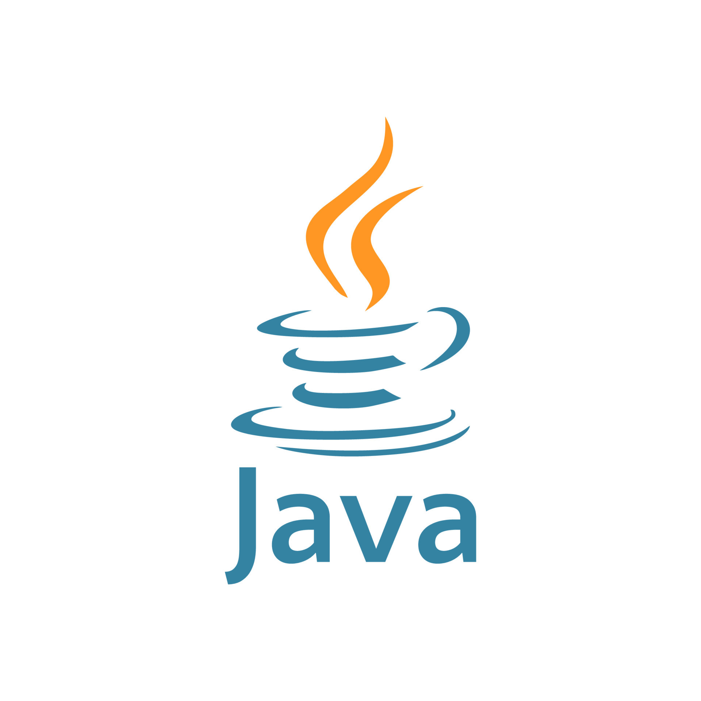

O que é Rails?

Lançado em 2004 sobre a licença MIT, o Ruby on Rails é um framework livre, multiplataforma, que permite a criação de aplicações com base em estruturas pré-definidas (de arquivos e pastas).
O Ruby on Rails é basicamente uma coleção de bibliotecas escritas na Linguagem de Programação Ruby.
Através do uso destas bibliotecas, podemos construir aplicações web de forma muito rápida, fácil e moderna.
Com ele é possível renderizar modelos HTML, manter páginas ativas via WebSockets, atualizar bancos de dados, enviar e receber e-mails, enfileirar trabalhos no modo assíncrono,
fornecer proteções de segurança sólidas para ataques comuns e armazenar uploads na nuvem.
Pra que serve?
O Ruby On Rails foi desenvolvido para facilitar o desenvolvimento de softwares em Ruby. Portanto, ele facilita a criação de todas as aplicações que podem ser construídas com essa linguagem, com destaque para aplicações desktop.
O Ruby On Rails também é bastante utilizado por startups que desenvolvem produtos digitais e
não querem investir muito tempo na programação. Além disso, o framework é suportado por aplicações mais maduras, que estão há mais tempo no mercado e têm um grande volume de usuários.
Como funciona?
As aplicações criadas com Ruby on Rails seguem o padrão arquitetural MVC (Model-View-Controller).
Ou seja, o MVC funciona da seguinte forma:
Ao receber uma requisição, o Controller solicita ao Model as informações necessárias, que as obtém e retorna ao Controller.
De posse dessas informações, o Controller as envia para a View que irá renderizá-las.
Model: Parte lógica da aplicação que gerencia o comportamento dos dados. Ou seja, todos os seus recursos (consultas ao BD, validações, notificações, etc). A camada de model apenas tem o necessário para que tudo aconteça, mas não sabe quando irá executar.
View: Gerencia a saída gráfica e textual da parte da aplicação visível ao usuário final. Não possui a responsabilidade de saber quando vai exibir os dados, apenas como irá exibi-los.
Controller: Essa é a camada que sabe quem chamar e quando chamar para executar determinada ação, interpretando as entradas do mouse e teclado do usuário, comandando a visão e o modelo para se alterarem de forma apropriada.
Bibliogafia
Sobre Termos e Politicas Ética e Conduta